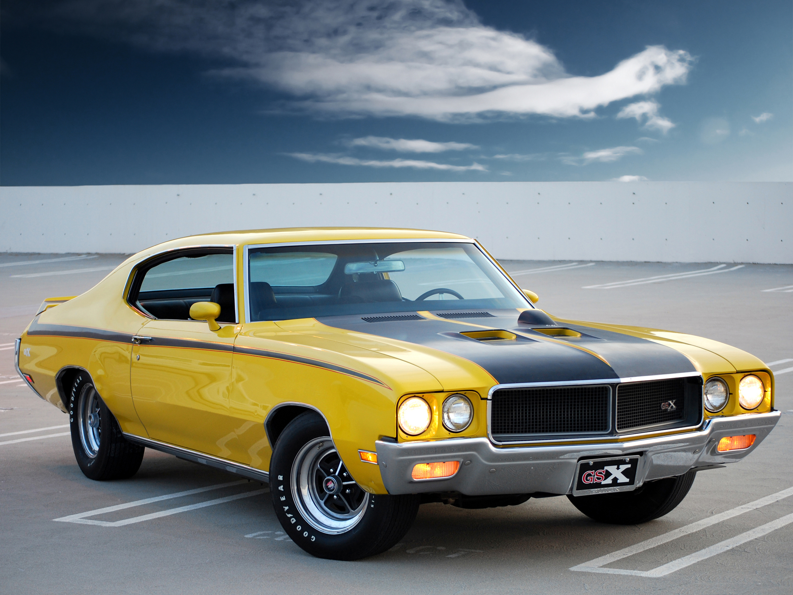
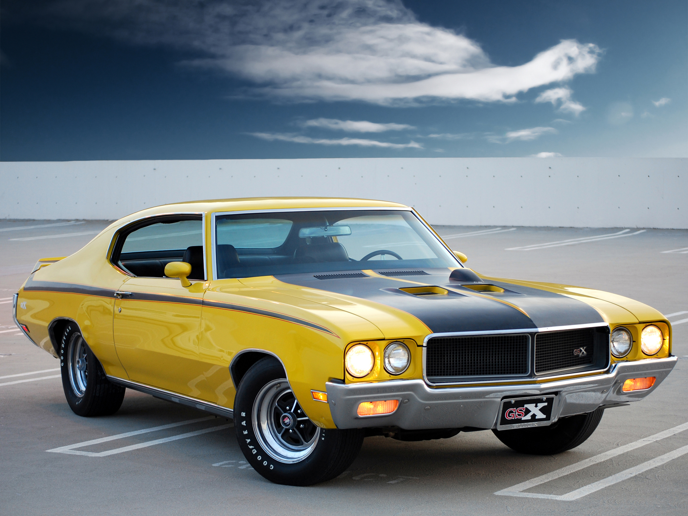

| Рекомендовані дописи | ||
|---|---|---|
| Назва моделі | Фото | Посилання |
| Chevrolet Impala '68 |  |
Вікіпедія |
| Ford Torino '70 |  |
Вікіпедія |
| Buick GSX |  | Вікіпедія |
| Рекомендовані дописи | ||
|---|---|---|
| Назва моделі | Фото | Посилання |
| Chevrolet Impala '68 | |
Вікіпедія |
| Ford Torino '70 | |
Вікіпедія |
| Buick GSX |  | Вікіпедія |